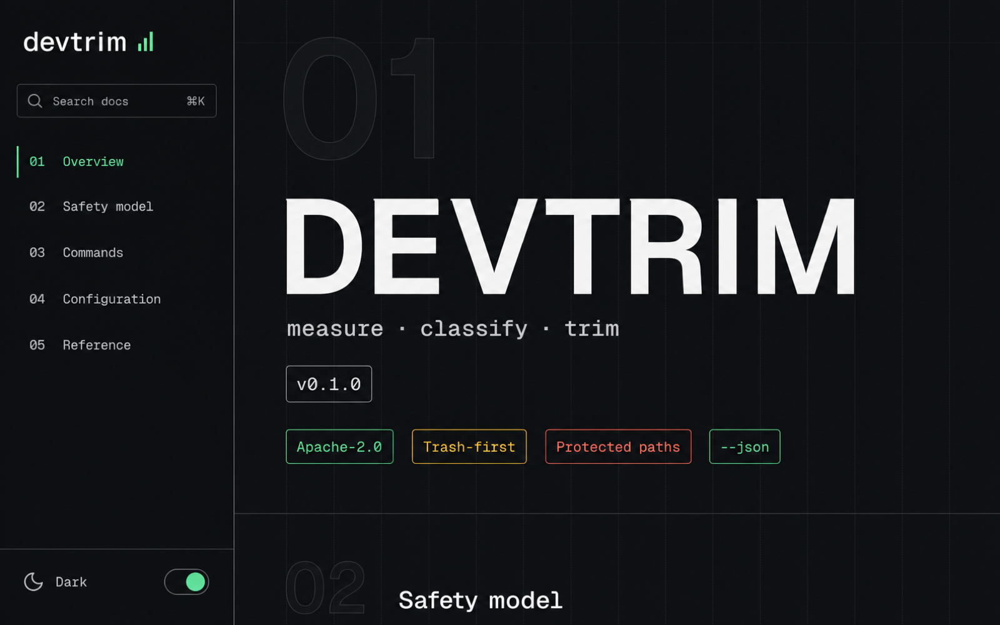

The problem
Developer Macs fill up silently.
DerivedData, model caches, simulators, Docker layers and six-month-old
node_modules quietly eat hundreds of gigabytes.
Local-first disk hygiene for macOS developer machines
See exactly what 40 GB of caches costs before anything moves. Every action is previewed and scored 1–10 for danger. Filesystem cleanup lands in the Trash — recoverable until you say otherwise.
Free and open source · Apache-2.0 · macOS 13+ · latest release v0.6.3

The problem
DerivedData, model caches, simulators, Docker layers and six-month-old
node_modules quietly eat hundreds of gigabytes.
The choice
Every target gets a danger score from 1 to 10. Rebuildable caches are amber. Unavailable simulators are caution; permanent Trash purge is red.
The boundary
Docker volumes are never pruned. Xcode Archives are never pruned. A typed, single deletion boundary plus a protected-path denylist no flag can override.
The result
Filesystem paths cleaned today are recoverable from Trash until it is emptied. Permanent deletion needs explicit critical confirmation. Cleanup still carries data-loss risk: review the preview, keep backups, and grant macOS permissions manually.
Videos load only when you play them.
devtrim opens the Ratatui interface; every operation is labelled READ-ONLY, PREVIEW, or PERMANENT before you pick it.The Ratatui interface has shipped since v0.4.0; explicit CLI subcommands and the one-document JSON contract remain available for automation.
devtrim / tuiKeyboard-first scan, preview, and confirmation with written risk labels. It reuses the same cleanup owners and rejects CLI bypass flags.
scanRead-only report with estimated logical sizes, danger levels, and one-document JSON output for agents.
cachesHuggingFace models, npm, Homebrew, uv. Re-downloads on demand — devtrim tells you the bandwidth cost instead of deciding.
node-modulesApplies exact previewed paths only when Git activity is conclusively older than 30 days. Unknown state is refused.
artifactsRust targets, virtualenvs, Pods, Gradle and bundler outputs — only with ecosystem corroboration, only in conclusively stale repos, never ambiguous names like build or dist.
historyEvery apply is journaled write-ahead. Review what was attempted and what completed — interrupted applies are visible, not invisible.
xcodeDeviceSupport symbols and DerivedData. Archives are always listed but never touched.
dockerUnused images and build cache. Volumes are sacred — a volume may hold your live database.
simulatorsDeletes devices whose runtime is gone. Confirmation flags never add an unpreviewed erase-all.
toolchains + leftoversOnly provably unreferenced Swift toolchains are actionable; agent leftovers are report-only review hints.
icloudLarge iCloud Drive files with logical and locally allocated sizes — a truthful storage inventory, not an upload-progress guess.
--shred is opt-in per run./System, /Applications, ~/.ssh and friends are refused unconditionally — no flag overrides.brew install mneves75/devtrim/devtrimInstalls the attested release binary plus shell completions and the man page.
Download for Apple siliconSHA-256 in release assets. Verify before running:
shasum -a 256 -c SHA256SUMS.txtgit clone https://github.com/mneves75/devtrim
cd devtrim
cargo build --release --locked
cp target/release/devtrim /usr/local/bin/Rust ≥ 1.88. No runtime dependencies beyond macOS 13+.
It reads nothing it shouldn't, changes nothing without --apply,
and keeps the safety net until you empty it. Provided AS IS; you accept the risk for applied targets.